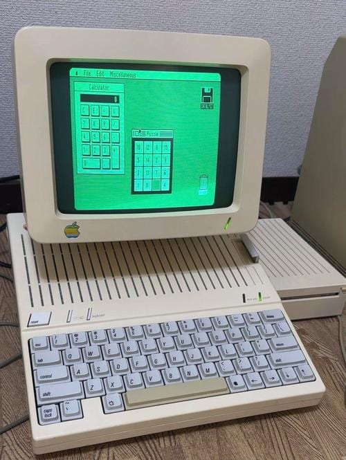

Apple II

1977 年 6 月上市的 Apple II，是第一批「开箱即用」的家用电脑之一：内置键盘与 BASIC、彩色图形、8 个扩展槽。1979 年 VisiCalc 电子表格在它上面诞生，成为史上第一款杀手级应用，直接把个人电脑从玩具推进商业世界。
客观评测
Apple II 于 1977 年 6 月上市，采用 MOS 6502（约 1MHz），内存 4KB 起、最高 48KB，支持复合视频输出与 280×192 彩色图形，内置 Integer BASIC，配 8 个内部扩展槽，1978 年获 Disk II 软驱支持。首发 4KB 版 $1,298。1979 年 VisiCalc 首发于该平台，至 1984 年 11 月累计售出第 200 万台。
主观点评
Apple II 是「电脑进入客厅」的第一声号角。掀开米色上盖，8 条空槽像 8 个抽屉一样等着被填满——内存卡、软驱卡、CP/M 卡，折腾其乐无穷。配上 Disk II 与 VisiCalc，它又成了正经的生意机器。今天收藏 Apple II 最动人的体验，是把老电视接上复合视频，看着闪烁的绿色光标打出提示符。原装键盘手感极佳，是 1977 三巨头中最值得供在书架上的一台。
优点与不足
- 8 个扩展槽带来极强的可玩性与生命力，全系生产延续十余年
- 彩色图形加内置 BASIC，开箱即用，对家庭与学校都友好
- VisiCalc 的诞生地，直接证明了个人电脑的商业价值
- 基础 4KB 内存过于寒酸，实用配置价格迅速攀升
- 早期仅靠盒式磁带存取程序，速度慢且不可靠
- 机型迭代多，跨型号软件兼容与硬件成色甄别门槛高
参数规格
| 上市时间 | 1977 年 6 月上市（4 月起开始交付） |
|---|---|
| 处理器 | MOS 6502 |
| 主频 | 约 1.0MHz |
| 内存 | 4KB 起，最大 48KB |
| 存储 | 盒式磁带；1978 年推出 Disk II 5.25 英寸软驱（143KB） |
| 显示输出 | 复合视频输出，接电视或显示器 |
| 分辨率 | 280×192 高分辨率图形（最高 6 色），40×24 文本 |
| 声音 | 单声道可编程蜂鸣器 |
| 扩展 | 8 个内部扩展槽，扩展卡生态极其丰富 |
| 接口 | 复合视频口、盒带接口、8 槽扩展总线 |
| 键盘 | 机身内置全尺寸键盘 |
| 操作系统 | Woz Integer BASIC 内置于 ROM（后期机型配 Applesoft BASIC） |
| 机身材质 | 米色塑料外壳，上盖可直接打开接触主板 |
| 尺寸 | 约 35.5×21.8×10 厘米 |
| 重量 | 约 2.2 千克（主机） |
| 电源 | 内置电源 |